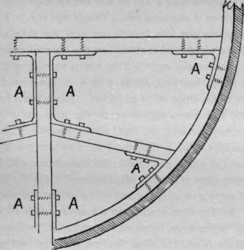

Whaling. Greenland Whale. Balaena Mysticetus. Part 2
Description
This section is from the book "Sea Fishing", by John Bickerdyke. Also available from Amazon: Sea Fishing.
Whaling. Greenland Whale. Balaena Mysticetus. Part 2
Her death is sometimes preceded by a violent struggle, in which she lashes the water into foam with her head, flukes, and tail. The foregores are detached, and the lines coiled back into the boats. The whale is then prepared for towing alongside the ship, which is done by cutting a hole through the two fins, passing a line called a ' fin tow ' through these holes, and lashing the ends together on the belly of the fish. The tail is then roused up to the bows of the boat, and the men proceed to tow their capture towards the ship. Unfortunately there is no space in this short chapter to describe flensing (pronounced flinching), i.e. the process of securing the valuable portions of the whale from the carcass.
1 Scoresby says the average stay of a fast fish under water is thirty minutes ; the longest he observed was fifty-six minutes ; but he adds that he has heard of fish in shallow water remaining an hour and a half.
The old fisherman's eyes sparkle as he describes the death of a forty-pound salmon, or a huge tarpon in Florida ; the old hunter yarns about that thirty minutes across the stiffest country in the kingdom ; the stalker buttonholes you about that monster stag ; but the writer, who has been fortunate enough to participate in all these sports besides others, must here record that nothing, even his biggest salmon in Norway, ever surpassed the rush of his first whale. Just imagine a fish weighing seventy tons,1 worth over 3,000 l., at the other end of a two and a half or three-inch line !
In 1892 whalebone was valued at over 3,000 l. per ton, but sold only for 1,300 l. a ton last March, owing, in all probability, to a big catch the Americans had in Behring Straits. Whaling may be cruel, but as long as these fish remain so valuable they will be hunted : and, if so, why may anyone not get his share of the sport, particularly as it is pursued at considerable risk ? Indeed, the fairest, gentlest, most philanthropic ladies of the land are one's aiders and abettors ; for is not whalebone used in the construction of their wearing apparel ? Whale oil is also largely employed in the manufacture of jute and Indian fibre used in making cheap carpets ; so we are all more or less implicated.
As a profession it is a healthy life, but a hard one. Wages from the captain downwards depend in a great measure on the success of the fishing, each man receiving, according to his rating, so much bone and oil money in addition to the low rate of pay he signs articles for, and the voyage often ends in disappointment; indeed,'clean'ships (as unsuccessful whalers are termed) have become much more frequent of late years, and this fishing industry seems to be declining.
1 Scoresby calculates the weight of a full-grown whale at seventy tons, and believes the largest specimens would weigh about a hundred tons.
By referring to Martin's 'Voyage to Spitzbergen' (Hak-luyt Society, 1855), it will be seen that formerly whales abounded along the ice at various points from Jan Mayen to Spitzbergen, and in the bays of the latter island ; but even in Scoresby's time they had deserted many of their former haunts, and every year they retire for protection from their greatest enemy, man, further and further into the ice. The writer has, however, heard whalers assert that there are as many fish as ever, if you can only find them, and the conditions of the ice will allow of their capture.
That there are as many as ever is very doubtful ; but if the ice is suitably placed as it is in some years, with a good ship and crew, a very prosperous voyage might still be made. Old hands also say that, owing to the bad catches of late years, a much inferior class of seaman follow this calling, which results in whales being scared by jealousy, misses, and bad management when a fish is fastened. The vessels employed in this fishing run from about 250 to 500 tons, and are built as strong as wood and iron can make them. Wood is found to bear the pressure of ice better than iron ; for although a wooden ship may be almost squeezed out of shape, provided nothing gives way when the nip eases off, she will regain her lines.
In 1857 the Innuit, the first steamer ever employed in this fishing, an iron vessel, made a good voyage to Davis Strait ; but she was lost in 1859, together with the iron steamers Empress of India and the Recruit, in rough weather, by striking the ice. Since this, only one other iron whaler appears to have been employed, viz. the River Tay which shared the same fate as the above vessels, and was crushed by the ice in Davis Strait in 1868. Iron is principally used as ' hanging knees ' to strengthen and fasten beam ends together, etc. ; but as readers may not understand the meaning of the term, a sketch of a section of the Arctic yacht Kara is given, showing how these hanging knees are used to assist in fortifying the ship.
Section Of Arctic Yacht ' Kara'.
To further protect them from the ice, they are double for a considerable distance above and below water-line, with a wood called iron bark—so heavy that it sinks in water. If this is not procurable teak and sometimes oak are used as substitutes. Their bows are protected also with steel plates. These precautions are very necessary, for a whaler in the pursuit of her calling has often to bore her way through ice, charging it repeatedly, and may be beset any time, receiving great pressure. Indeed the epitaph on many a fine vessel engaged in this fishing is, ' crushed by the ice.' In these days ships are all provided with steam, but at the same time they carry plenty of sail power, as on the fishing grounds, or if fish appear, the screw is immediately stopped.
All whalers assert that the black fish, as the Scotch fishermen term the Greenland whale, is an extremely timid animal, and any noise will alarm her ; indeed, a harpooneer declared to me that once when approaching a fish he saw her apparently listen and then tremble as if she were aware danger was near. Formerly the blubber was put into barrels, but now the ships are fitted with tanks in which coal is stowed on the outward voyage.
Continue to:
- prev: Chapter XVI. Whaling. Greenland Whale. Balaena Mysticetus
- Table of Contents
- next: Whaling. Greenland Whale. Balaena Mysticetus. Part 3
Tags
fishing, hooks, bait, fishermen, spanish mackerel, mackerel fishing